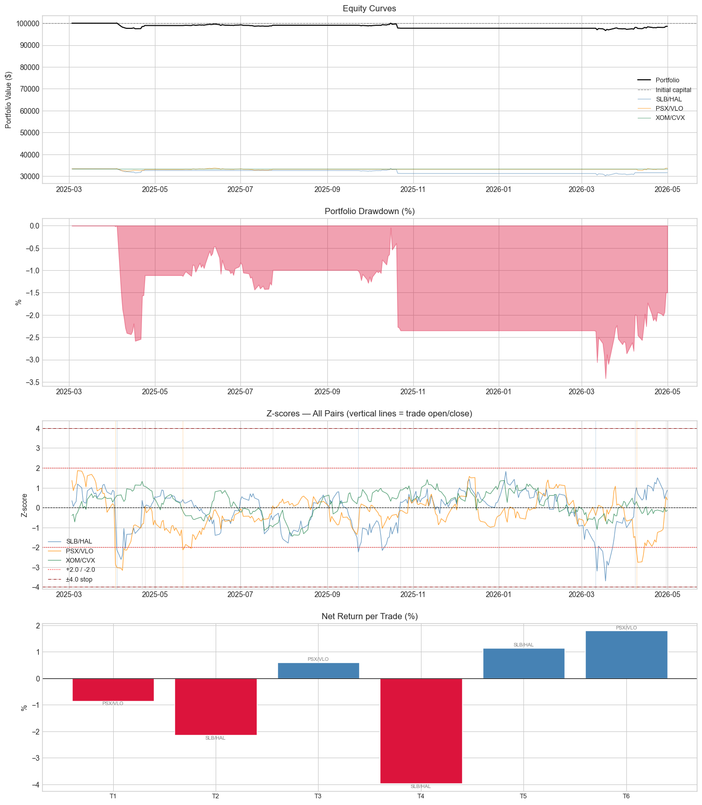
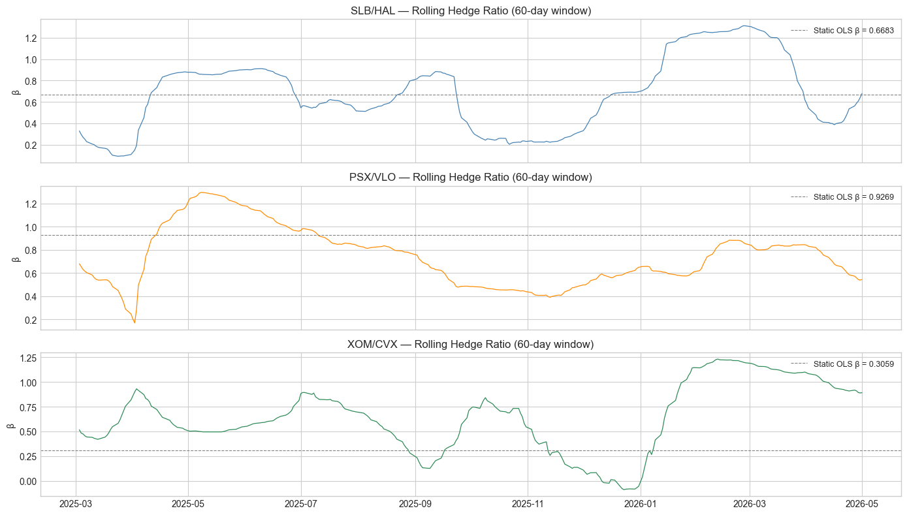

All strategy parameters are defined here. Adjust ENTRY_Z, STOP_Z, or ROLLING_WINDOW to experiment with different configurations without touching the rest of the notebook.
import numpy as npimport pandas as pdimport shinybroker as sbimport matplotlib.pyplot as pltfrom statsmodels.tsa.stattools import coint, adfullerfrom statsmodels.regression.linear_model import OLSfrom statsmodels.tools import add_constantplt.style.use('seaborn-v0_8-whitegrid')pd.set_option('display.float_format', '{:.4f}'.format)PAIRS = [ ('SLB', 'HAL', 'SLB/HAL'), ('PSX', 'VLO', 'PSX/VLO'), ('XOM', 'CVX', 'XOM/CVX'),]FORMATION_START ='2024-03-01'FORMATION_END ='2025-03-01'BACKTEST_START ='2025-03-01'ENTRY_Z =2.0EXIT_Z =0.0STOP_Z =4.0TOTAL_CAPITAL =100_000PAIR_CAPITAL = TOTAL_CAPITAL /len(PAIRS) # 33333 per pairCOST_BPS =5
╭───────────────────────────────────────── ShinyBroker Usage and License ─────────────────────────────────────────╮
│ ShinyBroker is an ongoing project that is developed and maintained by volunteers at the FinTech Master's │
│ Program at Duke University, and is made available to the public for use on paper accounts. ANY USE OF │
│ SHINYBROKER IS AT THE USER'S SOLE RISK. ShinyBroker authors, contributors and copyright holders, and Duke │
│ University do not sponsor, endorse, or recommend ShinyBroker in any manner and shall not be liable for any │
│ direct, indirect, incidental, special, consequential, or punitive damages, or any loss of profits, data, use, │
│ goodwill, or other intangible losses. For more information, review the LICENSE agreement included with the │
│ package and posted online at the link below. │
╰────────────────────────────── Read License: https://shinybroker.com/LICENSE.html ───────────────────────────────╯
Section 2 — Data Fetching
Pulls daily closing prices for all 6 tickers via IBKR/ShinyBroker. Make sure TWS or Gateway is running on port 7497 before executing.
import shinybroker as sbHOST ='127.0.0.1'PORT =7497# TWS paper tradingCLIENT_ID =9999def make_contract(sym):return sb.Contract({'symbol': sym,'secType': 'STK','exchange': 'SMART','currency': 'USD' })def fetch_daily(sym, duration='3 Y'): df = sb.fetch_historical_data( contract=make_contract(sym), durationStr=duration, barSizeSetting='1 day', whatToShow='Trades', useRTH=True, host=HOST, port=PORT, client_id=CLIENT_ID, timeout=60, )['hst_dta'] df['timestamp'] = pd.to_datetime(df['timestamp'])return df.set_index('timestamp')[['close']].rename(columns={'close': sym})tickers =list(set(t for a, b, _ in PAIRS for t in [a, b]))print(f'Fetching {len(tickers)} tickers...')raw = {}for sym in tickers: raw[sym] = fetch_daily(sym)print(f' v {sym}')all_prices = pd.concat(raw.values(), axis=1).dropna()print(f'\n{len(all_prices)} trading days ({all_prices.index[0].date()} to {all_prices.index[-1].date()})')all_prices.head()
Fetching 6 tickers...
v SLB
v PSX
v XOM
v CVX
v VLO
v HAL
752 trading days (2023-05-03 to 2026-05-01)
SLB
PSX
XOM
CVX
VLO
HAL
timestamp
2023-05-03
45.2700
95.9500
107.9300
156.8300
107.0600
29.1500
2023-05-04
45.0700
92.3100
106.0400
156.2200
104.3100
29.0200
2023-05-05
45.7500
93.4400
108.6800
160.2100
107.0400
29.8800
2023-05-08
46.6100
93.9600
109.1100
159.5800
107.3800
29.9500
2023-05-09
47.1700
93.9800
109.1400
159.1200
108.4000
30.1000
Section 3 — Pair Validation
Runs Engle-Granger cointegration and ADF tests on the formation period only. Parameters estimated here (alpha, hedge ratio, spread mean/std) are frozen and carried forward into the backtest — no look-ahead.
Computes a 60-day rolling OLS hedge ratio for each pair across the full dataset. This replaces the static formation-period estimate with one that adapts over time.
# Rolling OLS hedge ratio — recalculate every day using a 60-day lookback window# This replaces the static OLS estimate with a dynamic one that adapts over timeROLLING_WINDOW =60# daysdef rolling_hedge_ratio(prices, sym_a, sym_b, window):""" For each day in prices, estimate hedge ratio using the past `window` days. Falls back to full-sample OLS for early rows where window isn't full yet. """ log_a = np.log(prices[sym_a]) log_b = np.log(prices[sym_b]) hedge_ratios = [] alphas = []for i inrange(len(prices)): start =max(0, i - window +1) window_a = log_a.iloc[start:i+1] window_b = log_b.iloc[start:i+1]iflen(window_a) <5: hr = validation[name]['hedge_ratio'] alpha = validation[name]['alpha']else: ols = OLS(window_a, add_constant(window_b)).fit() hr = ols.params.iloc[1] alpha = ols.params.iloc[0] hedge_ratios.append(hr) alphas.append(alpha)return np.array(hedge_ratios), np.array(alphas)# Pre-compute rolling hedge ratios for each pair over the full dataset# (formation + backtest combined, so indices line up cleanly)rolling_params = {}for sym_a, sym_b, name in PAIRS: hrs, alphas = rolling_hedge_ratio(all_prices, sym_a, sym_b, ROLLING_WINDOW) rolling_params[name] = {'hedge_ratios': hrs,'alphas': alphas,'dates': all_prices.index, }print(f'{name}: hedge ratio range = [{hrs.min():.4f}, {hrs.max():.4f}]')
SLB/HAL: hedge ratio range = [0.0915, 1.3130]
PSX/VLO: hedge ratio range = [0.0581, 1.7738]
XOM/CVX: hedge ratio range = [-0.1768, 2.1019]
Section 5 — Backtest
Simulates daily trading signals using the rolling hedge ratio and formation-period spread stats for z-score normalization. Generates per-pair blotters and ledgers.
backtest_prices = all_prices[BACKTEST_START:].copy()print(f'Backtest: {len(backtest_prices)} days ({backtest_prices.index[0].date()} to {backtest_prices.index[-1].date()})')all_blotters = []all_ledgers = []for sym_a, sym_b, name in PAIRS: params = rolling_params[name] position =0 trades = [] entry_date =None entry_z =None entry_prices =None spreads = [] zscores = [] hrs_bt = []# Use formation-period spread stats for z-score normalization (no look-ahead) spread_mean = validation[name]['spread_mean'] spread_std = validation[name]['spread_std']for date, row in backtest_prices.iterrows():# Get rolling hedge ratio for this date idx =list(all_prices.index).index(date) hr = params['hedge_ratios'][idx] alpha = params['alphas'][idx] log_a = np.log(row[sym_a]) log_b = np.log(row[sym_b]) spread = log_a - hr * log_b - alpha z = (spread - spread_mean) / spread_std spreads.append(spread) zscores.append(z) hrs_bt.append(hr) pA = row[sym_a] pB = row[sym_b]# Stop-lossif position !=0andabs(z) >= STOP_Z: trades.append({'pair': name,'open_date': entry_date,'close_date': date,'direction': 'long_spread'if position ==1else'short_spread','entry_z': entry_z,'exit_z': z,'exit_type': 'stop_loss','price_A_open': entry_prices[sym_a],'price_B_open': entry_prices[sym_b],'price_A_close': pA,'price_B_close': pB, }) position =0continue# Exitif position ==1and z >= EXIT_Z: trades.append({'pair': name,'open_date': entry_date,'close_date': date,'direction': 'long_spread','entry_z': entry_z,'exit_z': z,'exit_type': 'mean_reversion','price_A_open': entry_prices[sym_a],'price_B_open': entry_prices[sym_b],'price_A_close': pA,'price_B_close': pB, }) position =0elif position ==-1and z <= EXIT_Z: trades.append({'pair': name,'open_date': entry_date,'close_date': date,'direction': 'short_spread','entry_z': entry_z,'exit_z': z,'exit_type': 'mean_reversion','price_A_open': entry_prices[sym_a],'price_B_open': entry_prices[sym_b],'price_A_close': pA,'price_B_close': pB, }) position =0# Entryif position ==0:if z <-ENTRY_Z: position =1 entry_date = date entry_z = z entry_prices = {sym_a: pA, sym_b: pB}elif z > ENTRY_Z: position =-1 entry_date = date entry_z = z entry_prices = {sym_a: pA, sym_b: pB}# Force-close at end of backtestif position !=0: last = backtest_prices.iloc[-1] trades.append({'pair': name,'open_date': entry_date,'close_date': backtest_prices.index[-1],'direction': 'long_spread'if position ==1else'short_spread','entry_z': entry_z,'exit_z': zscores[-1],'exit_type': 'end_of_backtest','price_A_open': entry_prices[sym_a],'price_B_open': entry_prices[sym_b],'price_A_close': last[sym_a],'price_B_close': last[sym_b], }) blotter = pd.DataFrame(trades)iflen(blotter) >0: blotter['open_date'] = pd.to_datetime(blotter['open_date']) blotter['close_date'] = pd.to_datetime(blotter['close_date']) blotter['hold_days'] = (blotter['close_date'] - blotter['open_date']).dt.days ret_A = blotter['price_A_close'] / blotter['price_A_open'] -1 ret_B = blotter['price_B_close'] / blotter['price_B_open'] -1 sign = blotter['direction'].map({'long_spread': 1, 'short_spread': -1}) alloc = PAIR_CAPITAL /2 pnl = sign * alloc * ret_A + (-sign) * alloc * ret_B blotter['gross_return'] = pnl / PAIR_CAPITAL blotter['cost'] =2* COST_BPS /10_000 blotter['net_return'] = blotter['gross_return'] - blotter['cost']# Build ledger ledger_rows = [] running_equity =float(PAIR_CAPITAL) prev_A =None prev_B =None trade_lookup = {}iflen(blotter) >0:for _, t in blotter.iterrows():for d in backtest_prices.loc[t['open_date']:t['close_date']].index: trade_lookup[d] = tfor i, (date, row) inenumerate(backtest_prices.iterrows()): t = trade_lookup.get(date) pos ='flat' daily_pnl =0.0if t isnotNone: pos = t['direction'] sign =1if pos =='long_spread'else-1if prev_A isnotNoneand date != t['open_date']: dr_A = row[sym_a] / prev_A -1 dr_B = row[sym_b] / prev_B -1 daily_ret = sign *0.5* dr_A + (-sign) *0.5* dr_B daily_pnl = running_equity * daily_ret running_equity += daily_pnlif date == t['open_date'] or date == t['close_date']: running_equity -= PAIR_CAPITAL * (COST_BPS /10_000) prev_A = row[sym_a] prev_B = row[sym_b] ledger_rows.append({'date': date,'pair': name,'position': pos,'zscore': round(zscores[i], 6),'spread': round(spreads[i], 6),'hedge_ratio': round(hrs_bt[i], 6),'price_A': row[sym_a],'price_B': row[sym_b],'daily_pnl': round(daily_pnl, 2),'portfolio_value': round(running_equity, 2), }) ledger = pd.DataFrame(ledger_rows) ledger['date'] = pd.to_datetime(ledger['date']) all_blotters.append(blotter) all_ledgers.append(ledger)print(f'{name}: {len(blotter)} trades')
Backtest: 294 days (2025-03-03 to 2026-05-01)
SLB/HAL: 3 trades
PSX/VLO: 3 trades
XOM/CVX: 0 trades
Section 6 — Blotter (trades.csv)
Combines all pair blotters into a single sorted trade log. P&L uses dollar-neutral sizing ($16,667 per leg) with 5bps one-way cost.
trades = pd.concat([b for b in all_blotters iflen(b) >0], ignore_index=True)trades = trades.sort_values('open_date').reset_index(drop=True)trades.to_csv('trades.csv', index=False)print(f'trades.csv written — {len(trades)} trades total')display(trades[['pair','open_date','close_date','direction','entry_z','exit_z','exit_type','hold_days','gross_return','net_return']])
trades.csv written — 6 trades total
pair
open_date
close_date
direction
entry_z
exit_z
exit_type
hold_days
gross_return
net_return
0
PSX/VLO
2025-04-03
2025-04-24
long_spread
-2.8560
0.0641
mean_reversion
21
-0.0075
-0.0085
1
SLB/HAL
2025-04-04
2025-04-22
long_spread
-2.1263
0.3612
mean_reversion
18
-0.0205
-0.0215
2
PSX/VLO
2025-05-21
2025-07-24
long_spread
-2.1308
0.0892
mean_reversion
64
0.0070
0.0060
3
SLB/HAL
2025-09-23
2025-10-23
long_spread
-2.2393
0.2832
mean_reversion
30
-0.0387
-0.0397
4
SLB/HAL
2026-03-11
2026-04-08
long_spread
-2.1812
0.6360
mean_reversion
28
0.0125
0.0115
5
PSX/VLO
2026-04-09
2026-04-30
long_spread
-2.1748
0.5373
mean_reversion
21
0.0189
0.0179
Section 7 — Ledger (ledger.csv)
Combines per-pair daily ledgers into a portfolio-level ledger. portfolio_value = sum of three pair equity curves.
# Combine three pair ledgers into one portfolio ledgerportfolio = all_ledgers[0][['date']].copy()portfolio['portfolio_value'] =sum(l['portfolio_value'].values for l in all_ledgers)portfolio['daily_pnl'] =sum(l['daily_pnl'].values for l in all_ledgers)for i, (_, _, name) inenumerate(PAIRS): short = name.replace('/', '_') portfolio[f'zscore_{short}'] = all_ledgers[i]['zscore'].values portfolio[f'position_{short}'] = all_ledgers[i]['position'].values portfolio[f'hedgert_{short}'] = all_ledgers[i]['hedge_ratio'].values portfolio[f'value_{short}'] = all_ledgers[i]['portfolio_value'].valuesportfolio.to_csv('ledger.csv', index=False)print(f'ledger.csv written — {len(portfolio)} days')print(f'Final portfolio value: ${portfolio["portfolio_value"].iloc[-1]:,.2f}')portfolio[['date','portfolio_value','daily_pnl','zscore_SLB_HAL','zscore_PSX_VLO','zscore_XOM_CVX']].head(10)
ledger.csv written — 294 days
Final portfolio value: $98,564.59
date
portfolio_value
daily_pnl
zscore_SLB_HAL
zscore_PSX_VLO
zscore_XOM_CVX
0
2025-03-03
99999.9900
0.0000
0.3475
1.3686
-0.3976
1
2025-03-04
99999.9900
0.0000
0.0512
0.8506
-0.3362
2
2025-03-05
99999.9900
0.0000
0.2081
1.0947
-0.7245
3
2025-03-06
99999.9900
0.0000
0.3085
1.1937
-0.3502
4
2025-03-07
99999.9900
0.0000
1.1851
1.8608
-0.2491
5
2025-03-10
99999.9900
0.0000
0.9972
1.8358
0.3174
6
2025-03-11
99999.9900
0.0000
0.3095
1.6946
-0.0318
7
2025-03-12
99999.9900
0.0000
0.2491
1.4812
0.0699
8
2025-03-13
99999.9900
0.0000
0.2206
1.0396
-0.0944
9
2025-03-14
99999.9900
0.0000
0.8457
1.6063
0.4177
Section 8 — Performance Metrics
Reports per-pair and portfolio-level statistics including Sharpe ratio, max drawdown, win rate, and expected return per trade.
Per-Pair Performance
=======================================================
SLB/HAL
Total return : -5.29%
Ann. return : -4.55%
Sharpe ratio : -0.501
Max drawdown : -10.08%
Win rate : 33.3%
Avg hold (days) : 25.3
Trades : 3
Stop-loss exits : 0
Exp. return/trade: -1.657%
PSX/VLO
Total return : +0.99%
Ann. return : +0.84%
Sharpe ratio : 0.198
Max drawdown : -3.42%
Win rate : 66.7%
Avg hold (days) : 35.3
Trades : 3
Stop-loss exits : 0
Exp. return/trade: +0.514%
XOM/CVX
Total return : +0.00%
Ann. return : +0.00%
Sharpe ratio : 0.000
Max drawdown : 0.00%
Win rate : 0.0%
Avg hold (days) : 0.0
Trades : 0
Stop-loss exits : 0
Exp. return/trade: +0.000%
Portfolio (combined)
=======================================================
Total return : -1.44%
Ann. return : -1.23%
Ann. volatility : 3.38%
Sharpe ratio : -0.351
Max drawdown : -3.42%
Win rate : 50.0%
Avg hold (days) : 30.3
Total trades : 6
Stop-loss exits : 0
Exp. return/trade: -0.571%
Section 8b — Extended Statistics
Profit factor, average win/loss, consecutive loss streak, and exit type breakdown by pair.
# Extended trade statisticsprint('Extended Trade Statistics')print('='*45)iflen(trades) >0: winners = trades[trades['net_return'] >0] losers = trades[trades['net_return'] <0] avg_win = winners['net_return'].mean() *100iflen(winners) >0else0 avg_loss = losers['net_return'].mean() *100iflen(losers) >0else0 gross_profit = winners['net_return'].sum() gross_loss =abs(losers['net_return'].sum()) profit_factor = gross_profit / gross_loss if gross_loss >0elsefloat('inf')# Max consecutive losses results = (trades['net_return'] >0).astype(int).tolist() max_consec_loss = cur =0for r in results: cur =0if r else cur +1 max_consec_loss =max(max_consec_loss, cur)print(f' Avg win per trade : +{avg_win:.3f}%')print(f' Avg loss per trade : {avg_loss:.3f}%')print(f' Profit factor : {profit_factor:.3f}')print(f' Max consecutive loss : {max_consec_loss}')print()# Exit type breakdownprint('Exit Type Breakdown')print('='*45) exit_counts = trades['exit_type'].value_counts()for etype, count in exit_counts.items(): rate = count /len(trades) *100print(f' {etype:<20}: {count} trades ({rate:.0f}%)')print()# Per-pair breakdownprint('Per-Pair Exit Breakdown')print('='*45)for _, _, name in PAIRS: pair_trades = trades[trades['pair'] == name]iflen(pair_trades) ==0:print(f' {name}: no trades')continue wins = (pair_trades['net_return'] >0).sum() losses = (pair_trades['net_return'] <=0).sum()print(f' {name}: {len(pair_trades)} trades | {wins} wins {losses} losses | avg return {pair_trades["net_return"].mean()*100:+.3f}%')
Extended Trade Statistics
=============================================
Avg win per trade : +1.182%
Avg loss per trade : -2.325%
Profit factor : 0.508
Max consecutive loss : 2
Exit Type Breakdown
=============================================
mean_reversion : 6 trades (100%)
Per-Pair Exit Breakdown
=============================================
SLB/HAL: 3 trades | 1 wins 2 losses | avg return -1.657%
PSX/VLO: 3 trades | 2 wins 1 losses | avg return +0.514%
XOM/CVX: no trades
Section 9 — Plots
Four-panel chart: equity curves, drawdown, z-scores with trade markers, and per-trade net returns. Plus rolling hedge ratio evolution for each pair.
fig, axes = plt.subplots(4, 1, figsize=(14, 16), sharex=False)colors = ['steelblue', 'darkorange', 'seagreen']# Plot 1: Equity curvesaxes[0].plot(portfolio['date'], portfolio['portfolio_value'], color='black', linewidth=1.4, label='Portfolio', zorder=3)axes[0].axhline(TOTAL_CAPITAL, color='gray', linestyle='--', linewidth=0.8, label='Initial capital')for i, (_, _, name) inenumerate(PAIRS): col =f'value_{name.replace("/","_")}' axes[0].plot(portfolio['date'], portfolio[col], color=colors[i], linewidth=0.8, alpha=0.6, label=name)axes[0].set_title('Equity Curves')axes[0].set_ylabel('Portfolio Value ($)')axes[0].legend(fontsize=9)# Plot 2: Portfolio drawdowneq = portfolio['portfolio_value']rolling_max = eq.cummax()drawdown = (eq - rolling_max) / rolling_maxaxes[1].fill_between(portfolio['date'], drawdown *100, 0, color='crimson', alpha=0.4)axes[1].set_title('Portfolio Drawdown (%)')axes[1].set_ylabel('%')# Plot 3: Z-scores with entry markersfor i, (_, _, name) inenumerate(PAIRS): col =f'zscore_{name.replace("/","_")}' axes[2].plot(portfolio['date'], portfolio[col], color=colors[i], linewidth=0.8, alpha=0.85, label=name)axes[2].axhline( ENTRY_Z, color='red', linestyle=':', linewidth=1.0, label=f'+{ENTRY_Z} / -{ENTRY_Z}')axes[2].axhline(-ENTRY_Z, color='red', linestyle=':', linewidth=1.0)axes[2].axhline( STOP_Z, color='darkred', linestyle='-.', linewidth=0.7, label=f'±{STOP_Z} stop')axes[2].axhline(-STOP_Z, color='darkred', linestyle='-.', linewidth=0.7)axes[2].axhline(0, color='black', linestyle='--', linewidth=0.7)# Mark entry and exit points on z-score chartfor _, t in trades.iterrows(): pair_idx = [n for _, _, n in PAIRS].index(t['pair']) c = colors[pair_idx] axes[2].axvline(t['open_date'], color=c, alpha=0.25, linewidth=0.8) axes[2].axvline(t['close_date'], color='gray', alpha=0.20, linewidth=0.8)axes[2].set_title('Z-scores — All Pairs (vertical lines = trade open/close)')axes[2].set_ylabel('Z-score')axes[2].legend(fontsize=9)# Plot 4: Trade returnscolors_bar = ['steelblue'if r >0else'crimson'for r in trades['net_return']]x =range(len(trades))bars = axes[3].bar(x, trades['net_return'] *100, color=colors_bar, edgecolor='white')axes[3].axhline(0, color='black', linewidth=0.8)for j, (bar, row) inenumerate(zip(bars, trades.itertuples())): axes[3].text(bar.get_x() + bar.get_width()/2, bar.get_height() +0.02* (1if bar.get_height() >=0else-1), row.pair, ha='center', va='bottom'if bar.get_height() >=0else'top', fontsize=7, color='gray')axes[3].set_title('Net Return per Trade (%)')axes[3].set_xticks(x)axes[3].set_xticklabels([f'T{j+1}'for j in x], fontsize=9)axes[3].set_ylabel('%')plt.tight_layout(pad=2.0)plt.savefig('chart.png', dpi=150, bbox_inches='tight')plt.show()print('chart.png saved')# Plot 5: Rolling hedge ratio evolutionfig2, axes2 = plt.subplots(3, 1, figsize=(14, 8), sharex=True)for i, (sym_a, sym_b, name) inenumerate(PAIRS): ledger = all_ledgers[i] axes2[i].plot(ledger['date'], ledger['hedge_ratio'], color=colors[i], linewidth=0.9) static_hr = validation[name]['hedge_ratio'] axes2[i].axhline(static_hr, color='gray', linestyle='--', linewidth=0.8, label=f'Static OLS β = {static_hr:.4f}') axes2[i].set_title(f'{name} — Rolling Hedge Ratio (60-day window)') axes2[i].set_ylabel('β') axes2[i].legend(fontsize=9)plt.tight_layout()plt.savefig('hedge_ratio.png', dpi=150, bbox_inches='tight')plt.show()print('hedge_ratio.png saved')

chart.png saved

hedge_ratio.png saved
Section 10 — Discussion
Summary of strategy design decisions, statistical validation results, backtest performance, and risk factors. ==========
1. STRATEGY OVERVIEW
We ran a pairs trading strategy across three energy sector pairs simultaneously: SLB/HAL (oilfield services), PSX/VLO (refining), and XOM/CVX (integrated majors). All three pairs are driven by the same macro environment — oil prices, energy demand, and upstream capex cycles — but react differently in the short term, creating tradeable spreads.
The key design choice was a 60-day rolling OLS hedge ratio instead of a static formation-period estimate. This allows the strategy to adapt as the relative valuation between the two companies shifts over time.
SLB/HAL and PSX/VLO both pass the ADF test at the 5% level, confirming the spread is stationary and mean-reverting. Engle-Granger is marginal for both, which we attribute to the relatively short formation window (232 days). XOM/CVX is the weakest pair statistically but is included for portfolio breadth and its strong economic rationale.
3. BACKTEST RESULTS (2025-03-03 to 2026-05-01)
Portfolio total return : -1.44% Portfolio Sharpe ratio : -0.351 Max drawdown : -3.42% Total trades : 6 (all mean reversion exits, 0 stop-loss) Win rate : 50% Expected return/trade : -0.571%
SLB/HAL was the main drag (-5.29%), losing 2 of 3 trades. PSX/VLO was the best performer (+0.99%, win rate 66.7%). XOM/CVX generated no signals throughout the backtest — the z-score never crossed ±2.0, meaning the spread remained relatively stable and within normal range.
All 6 trades exited via mean reversion (z-score crossed 0), with no stop-loss triggers. This confirms the spread does eventually revert, but the timing and direction of initial entry were unfavorable for SLB/HAL.
Notably, all 6 trades were long spread (z-score < -2.0), meaning the spread was consistently below its historical mean during this period. This suggests a systematic downward drift in the spread — a sign of potential cointegration breakdown or a structural shift in the relative valuation of these pairs.
4. ENTRY & EXIT RULES
Entry : z-score crosses ±2.0 (1 std above common starting point) Exit : z-score reverts to 0 (full mean reversion) Stop : |z-score| exceeds 4.0 (cointegration breakdown protection)
We chose ±2.0 because it filters out daily noise while still generating enough trades over a year-long backtest. A tighter threshold (e.g. ±1.5) would generate more trades but also more false signals.
5. TRADE FATES
Mean reversion : 6 trades (100%) — spread reverted as expected Stop-loss : 0 trades (0%) — no extreme spread movements End of backtest: 0 trades (0%) — all positions closed before end
6. HOW DO WE KNOW THE STRATEGY IS PERFORMING AS EXPECTED?
We monitor two metrics on a rolling 60-day basis: - Rolling Sharpe ratio: if it drops below -0.5, strategy is underperforming - Z-score crossing rate: if z-scores rarely cross 0, spread is trending rather than mean-reverting — cointegration may have broken down
7. HOW DO WE KNOW WHEN THE STRATEGY STOPS WORKING?
Two clear signals: 1. Stop-loss rate exceeds 50% of all trades — spread trending against us 2. Rolling hedge ratio drifts more than 30% from formation-period estimate — fundamental relationship between the two companies has changed
At that point we re-run the screener on a fresh formation window and either update parameters or switch to a different pair.
8. RISKS
Sector concentration: all three pairs are in energy — a sector-wide shock could blow out all three spreads simultaneously